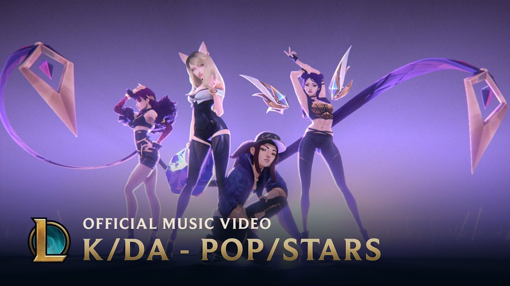

Riot Games's first venture into music was in 2014 with the virtual heavy metal band Pentakill, promoting a skin line of the same name. Pentakill is composed of six champions. Their music was primarily made by Riot Games's in-house music team, but features cameos by Mötley Crüe drummer Tommy Lee and Danny Lohner, a former member of the industrial rock band Nine Inch Nails. Their second album, Grasp of the Undying, reached Number 1 on the iTunes metal charts in 2017. Pentakill was followed by K/DA, a virtual pop group composed of four champions. As with Pentakill, K/DA is promotional material for a skin line by the same name. Their debut single, "Pop/Stars", premiered at the 2018 League of Legends World Championship, garnering over 38 million views on YouTube and mainstream interest from people unfamiliar with League of Legends. After a two-year hiatus, Riot Games released a second single from the virtual group in August 2020. In 2019, Riot created a virtual hip hop group called True Damage, featuring five champions. The vocalists performed a live version of the group's debut song, "Giants", during the opening ceremony of the 2019 League of Legends World Championship, alongside holographic versions of their characters. The in-game cosmetics promoted by the music video featured a collaboration with fashion house Louis Vuitton. 